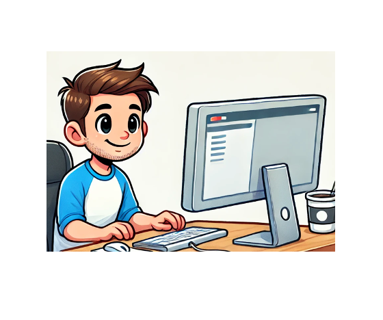

Hi, I'm Aco Vidovic! 
I am a spirited and imaginative front-end web developer with a passion for crafting visually stunning and highly interactive user experiences. Born and raised in a bustling coastal city, I grew up inspired by the vivid colors of the ocean and the dynamic energy of urban life, influences that shine through in my vibrant designs. A self-taught coder turned professional, I thrive on challenges, often losing track of time while perfecting animations or debugging complex JavaScript. Beyond the screen, I love sharing my knowledge through workshops and blogs, where I encourage others to embrace the art and logic of front-end development. My dream? To create a digital world as beautiful and intuitive as nature itself.